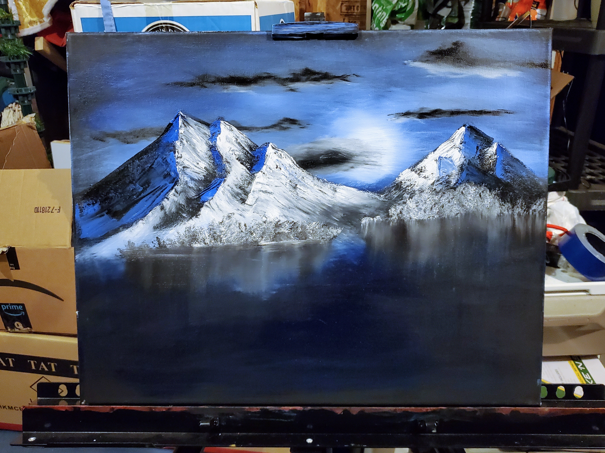

Resumé - Hobbies - Contact Me

As much as I have enjoyed playing video games in my life, nothing matches the fun I enjoy when I play Pinball! I currently play in leagues and tournaments where I've met some amazing people who also have the silver ball addiction.
My favorite game is Attack from Mars! (Pictured on the right) It's what got me into this mess!


I always have headphones on. Music is a big part of my life. I enjoy listening to and even playing music! It is something that brings us all together. I like to play the piano, guitar, ukulele, and also sing!
I recently also started to paint! I started in VR, just following some Bob Ross tutorials and loved the creative outlet it provided. Using the techniques I practiced virtually, translated pretty well to the real thing! It's not something I have done a lot, but hope to have more of in my life.
I did not like reading as a kid. I always saw it as a chore to get through a book. Now as an adult, I read mostly self improvement types of books. Your "How to Win Friends and Infulence People"s and "Atomic Habits" kind of books. They hold so much good information and insight. I wish I gave just a half more of a crap, when I was in school. Not to be a good little student, but to absorb and be the best I could be. There is so much to learn and appriciate in this life.
My Favorite books I've read are: